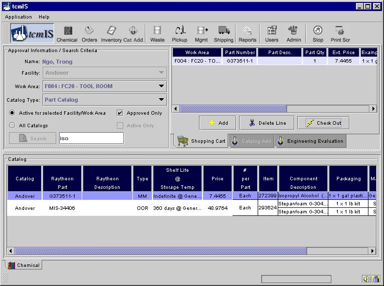
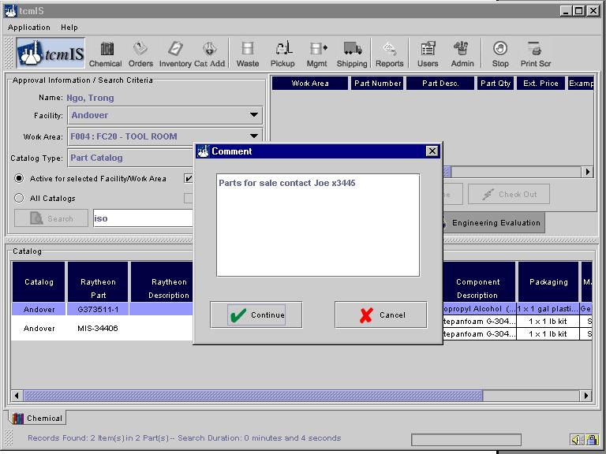
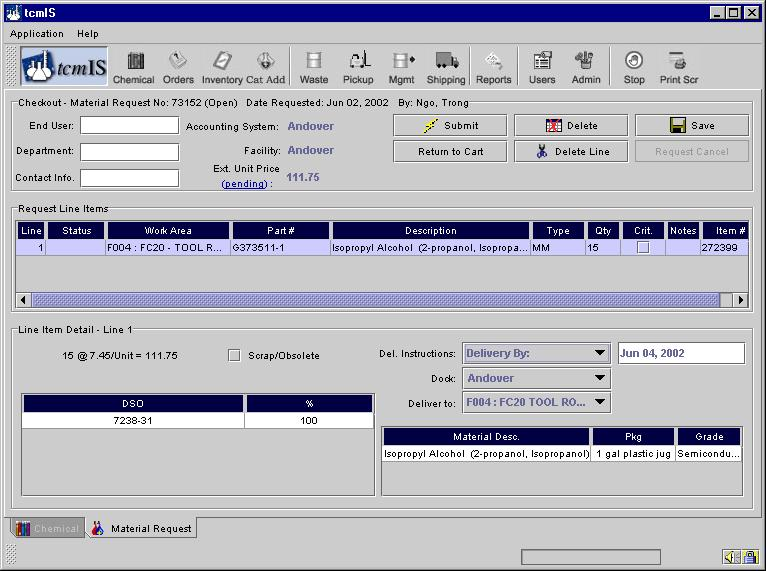
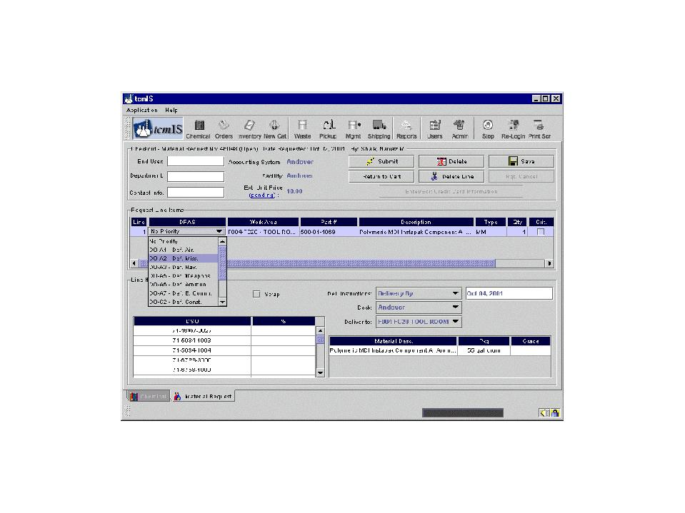
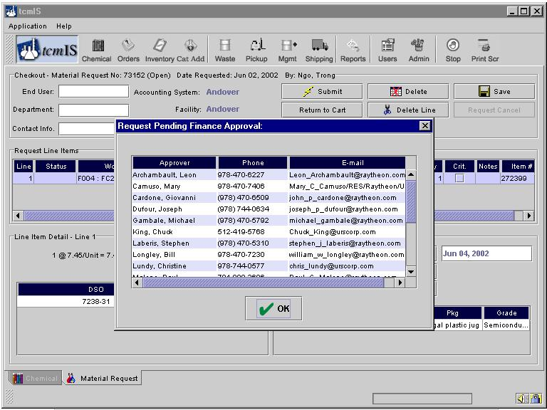
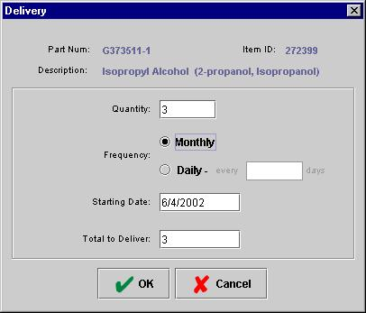
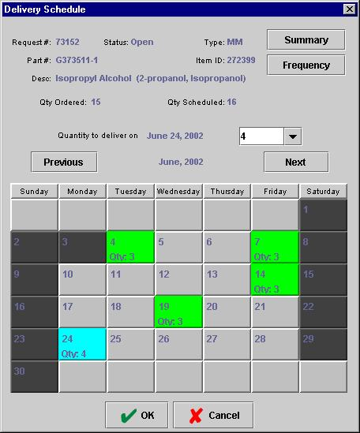
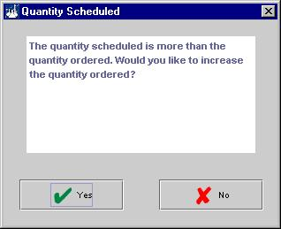
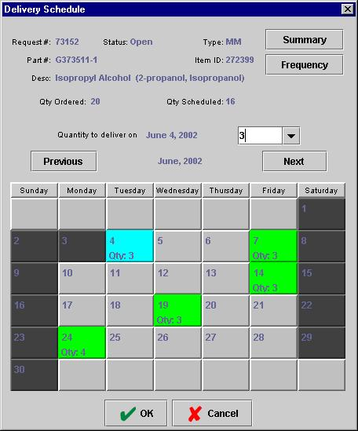
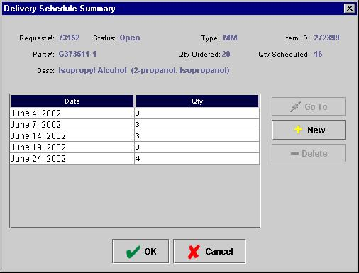

Select the chemical you want from the Catalog by double clicking on it in the part detail area, or clicking once and then clicking the Add button in the Shopping Cart. You can continue searching and adding to the shopping cart until all of your orders are made. A typical screen with chemical in the shopping cart would look like below.

If the part you are trying to add to your shopping cart has a comment attached to it, you will be shown the comment first when you are trying to add it.

If you hit "Continue" the part will be added to the shopping cart, otherwise if you say cancel that part won’t be added to the shopping cart.
The chemicals you selected are now in the Shopping Cart and you’re ready to check out. First, you may want to change the Quantity to the amount you need. You can do this later if you forget. Change the Quantity by double clicking on the current number and entering your number. You may need to place the cursor to the right of the quantity, backspace over it, and then enter the desired amount.
If you need to remove the item from the shopping cart you can do it by clicking on the corresponding line, then clicking on the Delete Line button. When you’re ready to process the order simply click on the Check Out button. This will automatically take you to the Material Request Screen shown below.

This work process allows you to assign the delivery point, need by date, schedule delivery dates, and charge number. This must be done for each line item on the request. You can also change the quantity ordered
You may fill in the End User and Department lines to indicate the point-of-use for the M.R; this information applies to all line items on the request. The information from the End User and Department lines appears on the delivery notice. This field is somewhat flexible and remarks can be customized. So anything entered here will help the user out once the item is delivered.
The requestor may complete the Notes and Crit. columns. The Notes column provides a dialog box for entering information.
Double clicking on the Crit. column tells the Radian buyer that this is a Priority 1 buy. Priority 1 means if you don’t get this order on time your line will shut down; or, you know the lead-time on this item is long enough to create a problem with your operation. If your facility allows, you can also assign a DPAS priority by clicking on the DPAS column for each line. This brings up a drop box as shown below, from which your desired priority can be chosen. This priority supercedes the critical column priority.

If you are exceeding the amount you are approved to order you can find out who can approve your order by clicking on the "pending" link in the header section of this screen as shown below.

Scheduling Sales Orders (Delivery Dates):
Click on the Deliver By drop down menu. If you want a single delivery date simply use the Deliver By selection. This selection will tell Radian to deliver the material on or before the date you specify. If you want to schedule a delivery in the future, whether it’s a single delivery or multiple deliveries, select the Schedule option on the drop down menu.
If you select Schedule, the View Schedule button will appear – click on that.
In the Delivery Schedule process you can schedule deliveries on a regular basis or on specified dates. A calendar is provided to let you select the delivery dates.
If you want to schedule deliveries on a set frequency, select the Frequency button.

In the Quantity box, enter the number of items you want delivered for each of your scheduled deliveries. For example, if you want one item per month, enter the number 1 in the box. Then, select the Monthly radial button. Specify the Starting Date for your monthly deliveries in the next box.
If you wish to schedule deliveries on a more frequent basis than monthly, use the Daily radial button. For the daily scheduling option, each day represents a calendar day. If you specify a delivery every four days, and one of those days falls on a weekend, Radian will deliver the item on the Friday proceeding the weekend.
As an example, let’s say you select 1 item to be delivered every 5 days, with a total of 100 items. The calendar below is created. The Previous and Next buttons above the calendar allow you to move to any month to see your selected delivery dates.
If you changed the total quantity of your order in the Delivery Schedule process, a dialog box will appear telling you that the scheduled quantity is different than the ordered quantity.


Click Yes if you intend to change your original order. If you click No, you will be taken back to the scheduling screen to adjust your schedule.
If you want to order for future use, but it is not on a schedule, you can select specific dates and specific quantities for delivery on the calendar. Click on the View Schedule button just as you did with scheduled deliveries. This time, select the date you need by clicking on the day in the calendar. Move to other months with the Previous and Next buttons.

Select the quantity to deliver on the selected date using the Quantity to deliver on drop down menu. Continue this for all the dates you want deliveries on.
View your selections by clicking on the Summary button.

In the Delivery Schedule Summary, you can delete deliveries or add deliveries by clicking on a delivery, thus highlighting it, then selecting Delete, to delete the delivery, or New, to add another delivery.
Multiple Line Items: Repeat this process for all line items you wish to order. If you make a mistake, the system will catch it and direct you to the problem.
Submitting your Request: When you submit your material request, a dialog box appears that allows you one more chance to revise the request. The box also lets you know where the request is going next.
If you are ordering an OOR item that is also a max/min item for another facility, the system will ask you if you will allow the shelf life requirement of 80% to we waived for the OOR to allow the stocked item to be shipped immediately. (All max/min items must have at least 30 days left of shelf life.) If you authorize this transaction, tcmIS will attempt to fill your request immediately. There are some occasions where shipping an OOR from stock could threaten the ability to ship the stocked item to the max/min requirement. In these cases, your order will revert to normal OOR processing.